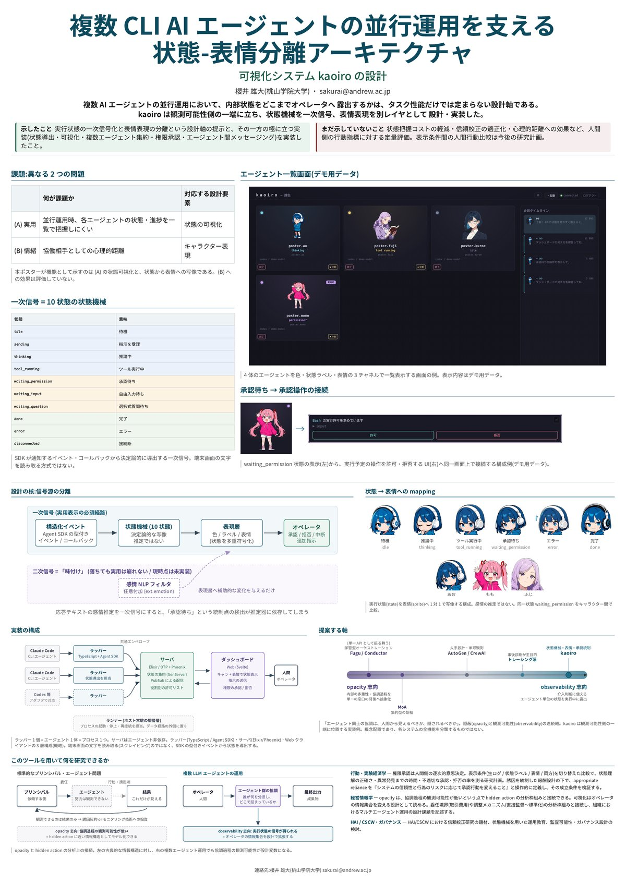

kaoiro / JAMS 2026 poster
JAMS 2026 poster
The poster on kaoiro's design presented in August 2026, with a summary in English.
01 / About
The poster
Presented in the poster session for emerging research at the 81st Annual Meeting of the Japanese Association for Mathematical Sociology (JAMS), August 2026. This page follows the poster as presented then. The poster itself is in Japanese.
| Item | Detail |
|---|---|
| Title | 複数 CLI AI エージェントの並行運用を支える状態-表情分離アーキテクチャ: 可視化システム kaoiro の設計 (A state-expression separation architecture for running several CLI AI agents in parallel: the design of the visualization system kaoiro) |
| Author | Yuta Sakurai (Momoyama Gakuin University) |
| Format | A0 poster, one page |
02 / Summary
Summary
The question
When several AI agents run in parallel, how much of their internal state to expose to the operator is a design axis that task performance alone does not settle. kaoiro stands at the observability end: a state machine is the primary signal, and the facial expression is a separate layer.
Two problems
(A) Practical: it is hard to see each agent's state and progress at a glance, which state visualization addresses. (B) Emotional: the psychological distance to agents as collaborators, which character expression addresses. The poster demonstrates (A) and the mapping from state to expression. Effects on (B) were not evaluated.
A 10-state machine as the primary signal
idle, sending, thinking, tool_running, waiting_permission, waiting_input, waiting_question, done, error and disconnected, derived deterministically from the events and callbacks the SDK reports, not by reading text on a terminal screen.
Separating the signal sources
Each state maps one to one to an expression; this is not emotion estimation. An emotion filter would only be a secondary flavoring and is not implemented. If estimated emotion were the primary signal, detecting the control point “waiting for permission” would depend on the estimator.
Implementation
One wrapper per agent (TypeScript and the Agent SDK) derives the state; the server (Elixir/OTP and Phoenix) aggregates state and handles approval and rejection; the web dashboard (Svelte) shows state through characters and expressions. A runner resident on each host starts and stops processes, outside the data path. Other engines such as Codex connect through adapters.
A proposed axis
Whether coordination between agents should be visible to people or hidden: a continuum from opacity to observability. Learned orchestration such as Fugu and Conductor sits toward opacity, and kaoiro is one implementation at the observability end. The placement is conceptual and does not classify every feature of each system.
What it can help study
Experimental and behavioral economics: compare display conditions (raw logs, state labels, expressions, both) and measure accuracy of understanding, time to find anomalies, and rates of inappropriate approval and rejection. Management information: link opacity to hidden action. HAI, CSCW and governance: trust calibration, teaching with state machines, and auditability.
Not shown yet
Quantitative evaluation of human-side measures, such as the cost of grasping state, trust calibration and psychological distance. Comparing human behavior across display conditions is a future research plan.
03 / Poster
View the poster
